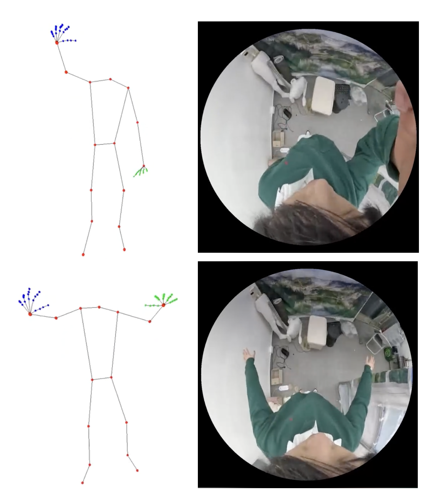
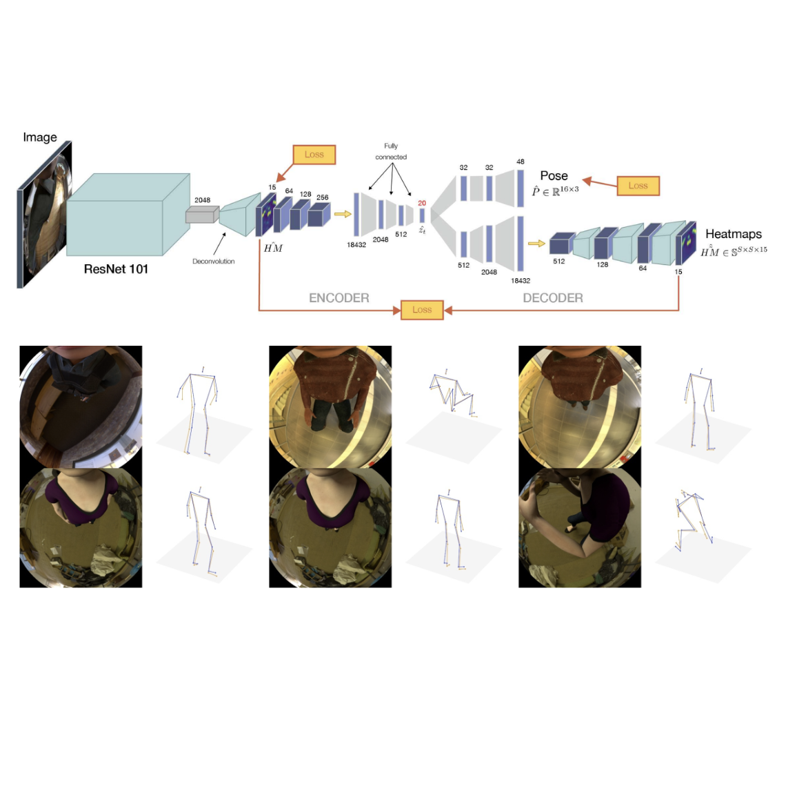
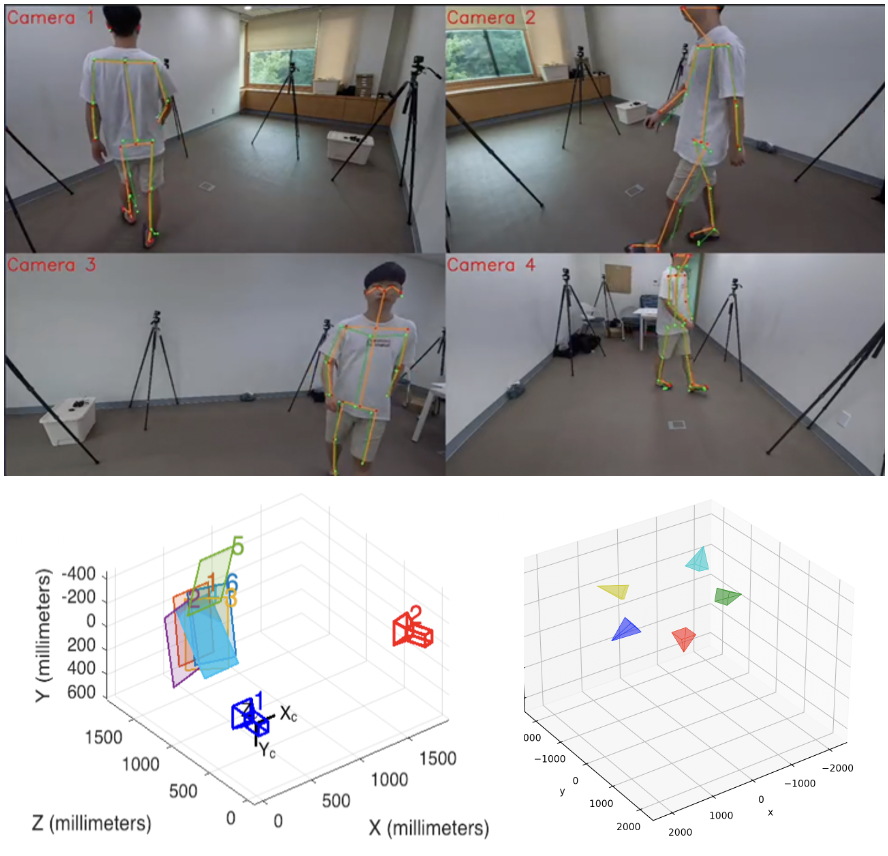
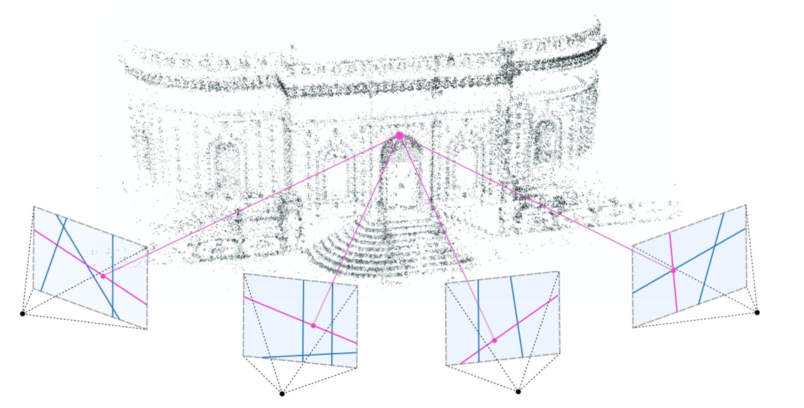
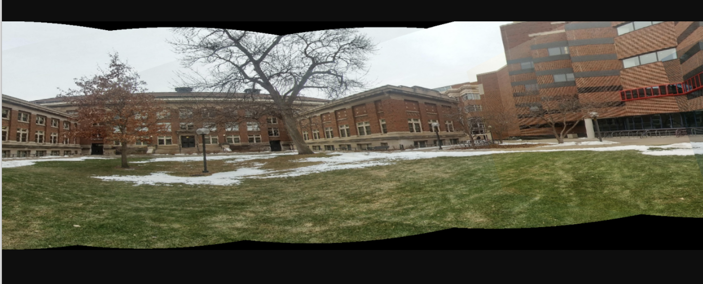
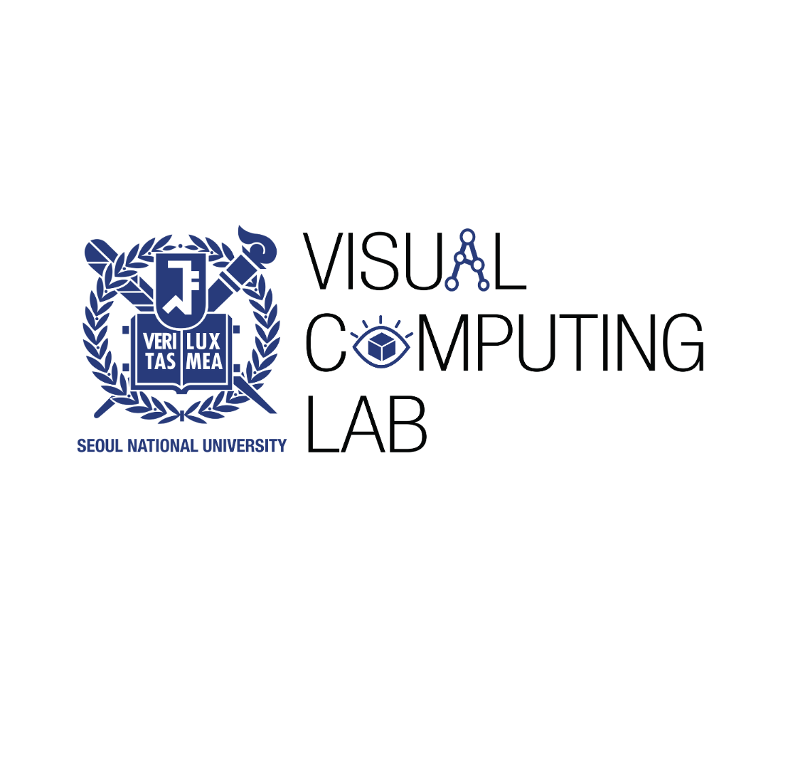

|

|
Egocentric Full Body + Hand Pose Estimator
Egocentric 3D Body + Hand Pose Estimator from a Single RGB Fisheye Camera.
Feb. 2024
code
|

|
xR-Egopose: Egocentric 3D Human Pose Estimator
Unofficial implementation of the paper "xR-EgoPose: Egocentric 3D Human Pose from an HMD Camera" (ICCV 2019, Oral)
Jan. 2023
code
|

|
Multicamera Stereo 3D Human Reconstruction
3D Human Reconstruction From Multi-View Stereo (5 GoPro Cameras)
Sep. 2022
code
|

|
Structure from Motion
Implementation of the Classical Structure from Motion Algorithm.
May. 2022
code
|

|
Panorama Image Generator
Panorama Image from a Sequence of Images.
Apr. 2022
code
|
|
|
Seoul National University
M.S in Computer Science and Engineering
March. 2022 - Feb. 2024
|
|
University of Virginia
B.A in Computer Science
Aug. 2017 - May. 2021
|
|
|
CUBOX
AI Research Engineer
March. 2024 - Present
Alternative Military Service
3D Face/Body/Hands Reconstruction
Facial Performance/Appearance Capture
3D Face Generation/Synthesis
|

|
Visual Computing Lab
Graduate Researcher
Nov. 2021 - Feb. 2024
Advisor: Hanbyul Joo
3D Human/Hand Pose Estimation
Egocentric Human Pose Estimation
|
{kind=link}